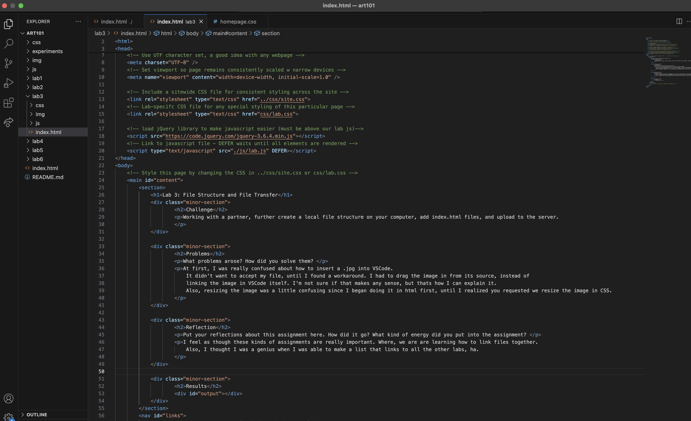
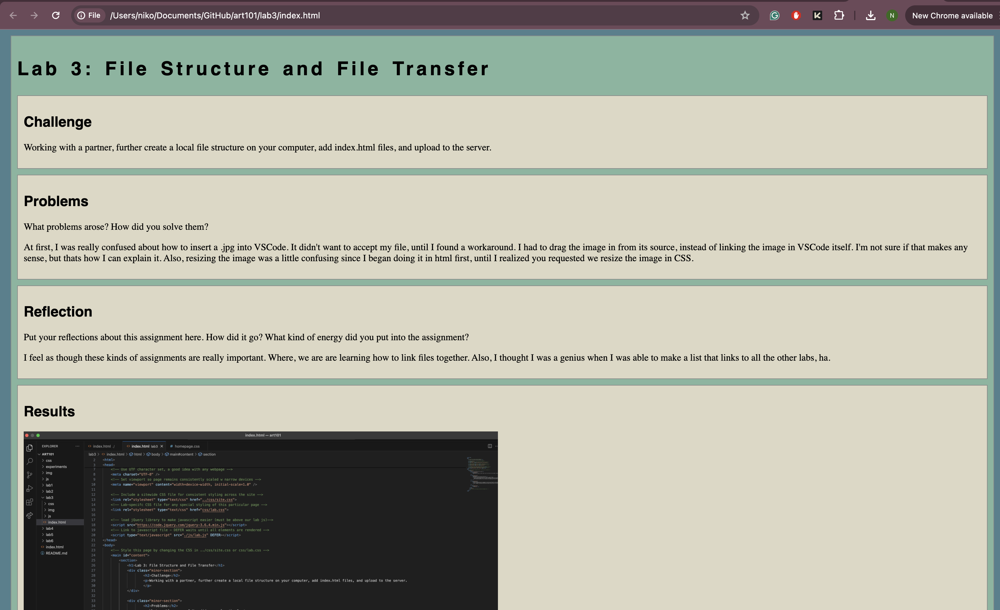
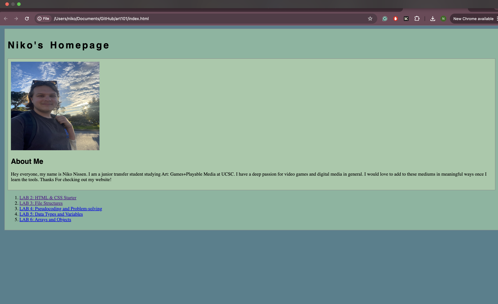

Lab 3: File Structure and File Transfer
Challenge
Working with a partner, further create a local file structure on your computer, add index.html files, and upload to the server.
Problems
What problems arose? How did you solve them?
At first, I was really confused about how to insert a .jpg into VSCode. It didn't want to accept my file, until I found a workaround. I had to drag the image in from its source, instead of linking the image in VSCode itself. I'm not sure if that makes any sense, but thats how I can explain it. Also, resizing the image was a little confusing since I began doing it in html first, until I realized you requested we resize the image in CSS.
Reflection
Put your reflections about this assignment here. How did it go? What kind of energy did you put into the assignment?
I feel as though these kinds of assignments are really important. Where, we are are learning how to link files together. Also, I thought I was a genius when I was able to make a list that links to all the other labs, ha.
Results
Lab 3 Index.html In Editor:
Lab 3 index.html In Browser:
Niko's Homepage In Browser:
